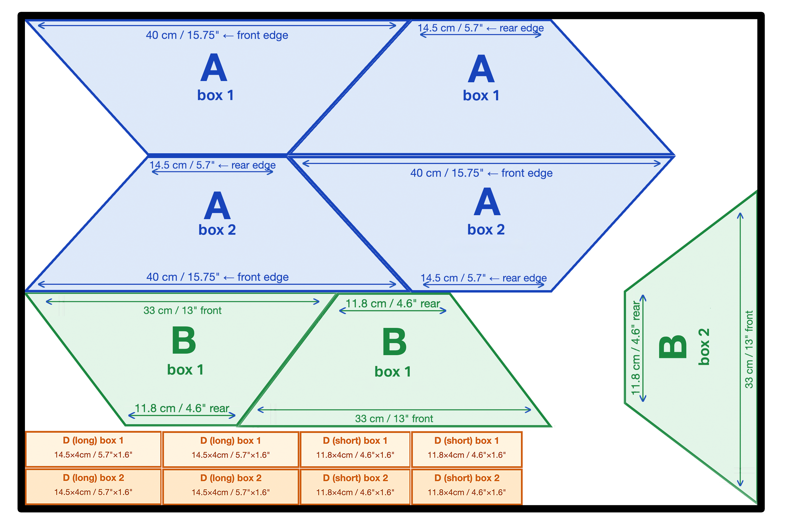
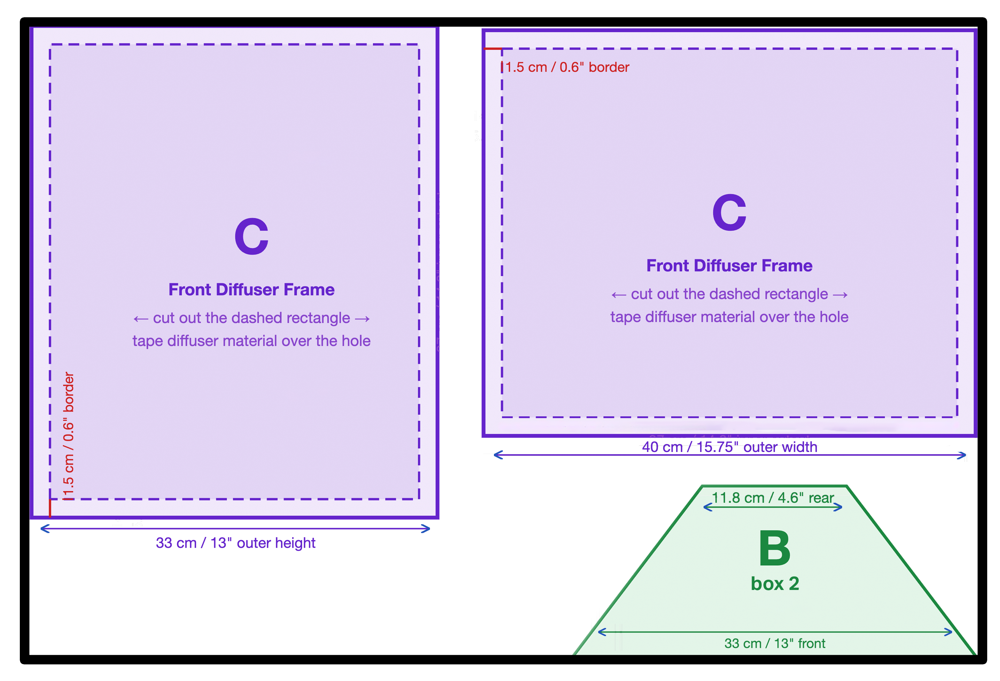

Husky 1000lm Work Lights · 2× sets · Home studio / Reels
Housing: 13.5 × 10.8 cm
Front face: 40 × 33 cm (16" × 13")
Depth: 14 cm (5.5")
Design by Alex Mackenzie — alexmack.ca
1
What You'll Need
Foam Board / Foam Core — 20"×30" sheets
~5mm thick white foam core. Available at craft stores, art supply shops, or office supply stores. Look for "foam board" or "foam core".
2 sheets
Aluminium Foil Tape — 48mm wide roll
HVAC / duct foil tape. Way better than kitchen foil — sticks flat and stays put. Lines the inside of all trapezoid panels to bounce light forward.
1 roll
Double-Sided Velcro Roll — hook-and-loop
Used to secure softbox collar to the light's fold-out handle. A single roll gives you plenty for both lights.
1 roll
Heavy-Duty Black Duct Tape
T-Rex or Gorilla Tape recommended — strong hold on foam board seams. For sealing and reinforcing all exterior corner seams.
1 roll
Shower Curtain Liner — frosted white or clear
Diffuser material for the front face. Frosted white gives the softest, most even light. One liner covers both boxes easily. Dollar store works great.
1 liner
Tracing Paper or Parchment Paper
For the inner baffle (Panel E). Need one piece 27.3 × 22.4 cm (10.7" × 8.8") per box. A standard sheet may be too small — get a roll or large pad.
1 roll/pad
Hot Glue Gun + Glue Sticks
Used throughout assembly for joining panels and securing the baffle.
Metal Ruler + Box Cutter / X-Acto Knife
A metal ruler is essential. Keep your blade sharp for clean cuts.
1 each
2
Final Dimensions (per box)
Rear Opening
14.5 × 11.8 cm
5.7" × 4.6" — slips over housing
Front Opening
40 × 33 cm
15.75" × 13" — diffuser face
Depth
14 cm / 5.5"
rear to front face
Total sheets
2 sheets
both boxes from 2× 20"×30" foam board
3
The 5 Panel Types
A
Long Side · Trapezoid
Rear edge14.5 cm / 5.7"
Front edge40 cm / 15.75"
Height14 cm / 5.5"
Slant legs~15.6 cm / 6.1"
× 4 total (2 per box)
B
Short Side · Trapezoid
Rear edge11.8 cm / 4.6"
Front edge33 cm / 13"
Height14 cm / 5.5"
Slant legs~15.0 cm / 5.9"
× 4 total (2 per box)
C
Front Diffuser Frame
Outer40 × 33 cm / 15.75" × 13"
Cut-out window37 × 30 cm / 14.6" × 11.8"
Border1.5 cm / 0.6" all sides
× 2 total (1 per box)
D
Rear Collar · 4 strips
2× long strips14.5 × 4 cm
2× short strips11.8 × 4 cm
Long (inches)5.7" × 1.6"
Short (inches)4.6" × 1.6"
8 strips total (4 per box)
E
Inner Baffle — Optional but recommended
Tracing paper or parchment paper rectangle, mounted halfway through the box
Sits at 7 cm / 2.75" depth from the rear (exactly halfway). At that point the box interior has tapered to 27.3 × 22.4 cm (10.7" × 8.8") — cut to that size.
Light hits the baffle first, scatters, then hits the front diffuser and scatters again. Eliminates the bright centre hotspot for even, wrappy light. Material: tracing paper, parchment paper, or single-layer white tissue paper.
Cut size
27.3 × 22.4 cm
10.7" × 8.8"
× 1 per box
4
Cut Diagrams — for two boxes
Shared-edge cutting: Panels are arranged so edges overlap where possible — a single cut provides an edge for two adjacent pieces. Work through each sheet methodically before making any cuts, mark all lines first, then cut.
Foam board 1 of 2 · 50 × 75 cm / 20" × 30" · 4 × Panel A, 3× Panel B, 8× Panel D (short and long for collar)

Foam board 2 of 2 · 50 × 75 cm / 20" × 30" · 2 × Panel C (diffuser frame), 1× Panel B. Keep scraps if you want to make grid (in next guide)

Panel E — Inner Baffle · Tracing paper or parchment paper · No foam board needed · 1 per box
How to mark a trapezoid on foam board: Draw a centre line down the length of your panel area. Mark the rear edge symmetrically around centre at the top (e.g. 14.5 cm for Panel A). Mark the front edge symmetrically at the bottom (e.g. 40 cm). Connect top-left to bottom-left and top-right to bottom-right with a metal ruler. Cut along those lines.
5
Assembly — Step by Step
1
Cut all panels first
Cut everything from both sheets before assembling. Label each piece with pencil as you go: A×4, B×4, C×2, and the 8× D strips across both boxes. Do not start assembling until all pieces are cut. Keep leftovers in case you want to add grid (separate guide)
2
Line inside with foil tape
Apply aluminium foil tape to the inside face of all 4 trapezoids per box (A×2, B×2). Cover every inch. This reflects light forward and significantly increases output before the diffuser.
3
Build the rear collar (D)
Hot glue the 4 D strips into a shallow rectangular frame, interior size 14.5 × 11.8 cm. Reinforce the corners with duct tape. The collar slips over the Husky housing and is held in place with Velcro straps looped around the light's fold-out handle.
4
Join panels at corners
Cut small 2" × 2" (5 × 5 cm) square brackets from foam board offcuts — 4 per box. Hot glue these flat against the inner face of each A-B corner junction, bridging the joint. Once the glue sets, run a bead of hot glue along the outer seam, then reinforce with duct tape along all exterior corner seams. No bevel cuts needed.
5
Join box body to collar
Sit the rear opening of the assembled box onto the collar (D). The collar hugs the outside of the rear opening. Hot glue around the join, then tape all the way around with duct tape.
5b
Install inner baffle (E)
Before closing the front, tape 4 small strips of foil tape to the interior walls at the 7 cm mark from the rear as ledges. Or you can use hot glue and go edge by edge. Lay the tracing or parchment paper baffle (27.3 × 22.4 cm) across them and tape all 4 edges flat to the walls. Should be taut with no sag. Do not skip this if you want even light.
6
Attach front diffuser frame (C)
Cut shower curtain liner about 2 cm larger than the window on all sides. Tape it to the back side of Panel C, taut across the opening. Then tape Panel C to the front of the box.
7
Attach to light
Slide the collar over the Husky housing. Thread two Velcro straps around the fold-out handle — one above, one below. Cinch snugly. Repeat for box #2.
Softbox Build Guide v4 · Husky 1000lm Work Lights · 2× softboxes from 2 sheets of foam board · Design by Alex Mackenzie — alexmack.ca